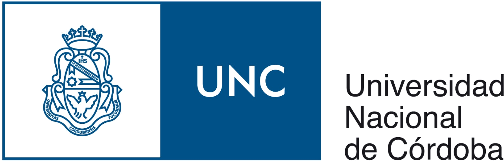
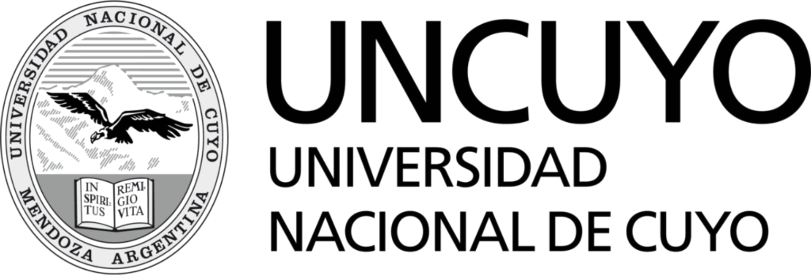
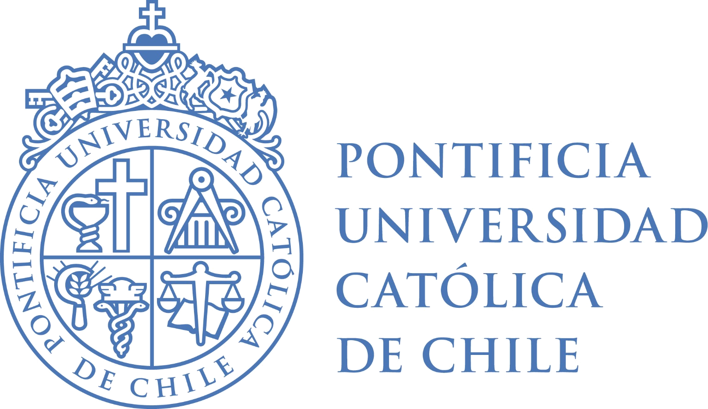
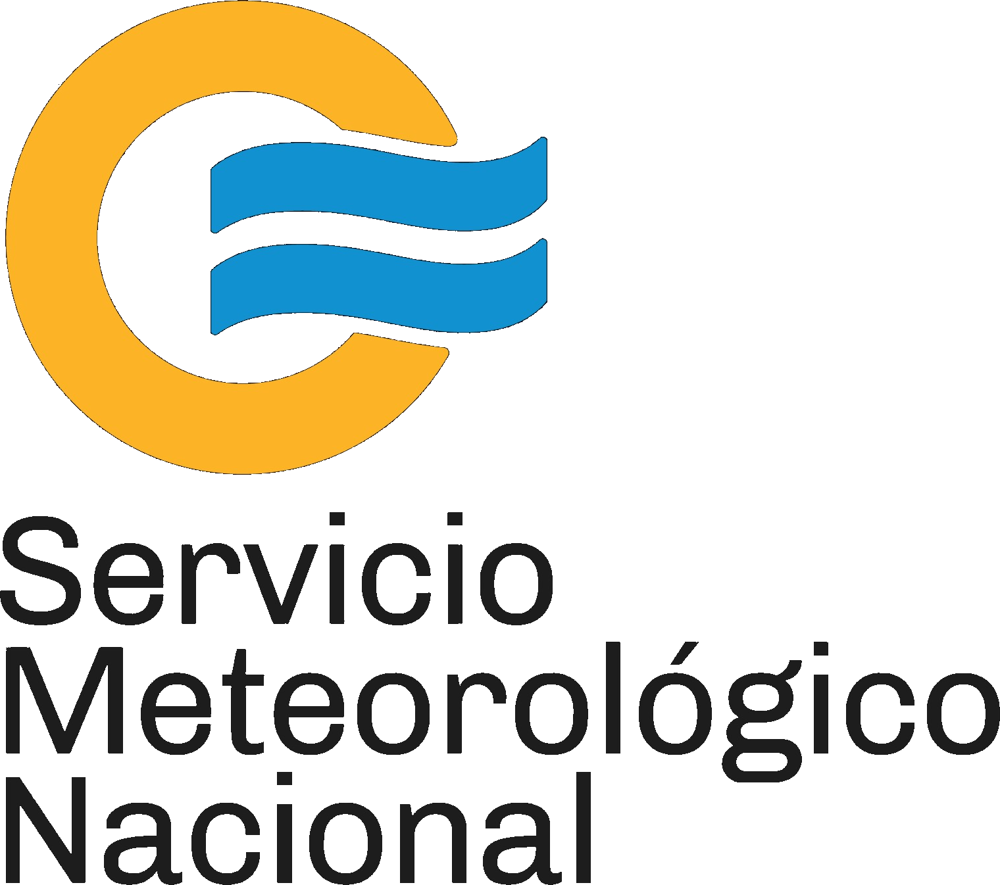
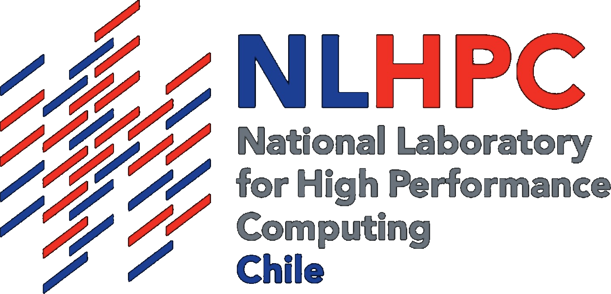

Tropical Pacific
A central test: capturing ENSO and the observed pattern of recent Pacific cooling.
Building world-class climate modeling and prediction capacity in South America.
South America now has the supercomputing resources to run state-of-the-art climate models — and the scientific expertise to use and improve them.
Rather than building a new modeling system from scratch, we build on the Community Earth System Model (CESM), a flexible and well-tested framework with a vast hierarchy of simulations, resolutions, configurations and experiments.
A central test: capturing ENSO and the observed pattern of recent Pacific cooling.
We modify CESM and carry those changes through long coupled integrations — with the Andes update as current proof.
Scientific capacity across Argentina and Chile, supported by computing resources at SMN and NLHPC.
Leads climate prediction development at SMN and the paired-ensemble analysis underlying the proposal.
IPCC delegate, scoping and contributing author. Develops a South American grid for Variable Resolution CESM.
Runs CESM for dust aerosol cycles and paleoclimate, including representation of micronutrient iron processing in glacial dust.
Runs CESM for atmospheric chemistry.
A non-profit organization within the initiative's international climate-science network.




